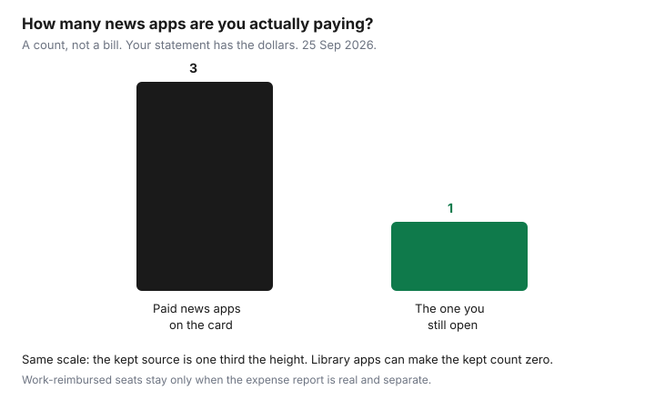

Subscriptions · Canada
News and Magazine Subscriptions in Canada: Keep One, Drop the Rest
News subscriptions stack quietly: a print delivery, a digital login, an app billed by Apple, and a second paper someone started for an election. The intro price is the bait. The renewal is the product. A household that reads one paper well does not need three overlapping apps, and a library card already opens a surprising number of those pages. This is the keep-one rule. Apple News+ as its own bundle is the News+ guide. PressReader’s limits are the library-card guide.
Disclosure: This guide has no natural affiliate offer. Saving Optimizer does not claim a partnership with any newspaper, Apple, or a library vendor. Education only, not tax advice. The renewal on your statement is the price.
Key takeaways
- List every print, digital, and app-store news charge for 90 days. Apple, Google, and the publisher can bill the same title twice if you are not looking.
- Open PressReader or Libby before you pay retail. At Toronto Public Library, read 25 Sep 2026, the Star, Sun, National Post, and New York Times are named on PressReader. The Globe and Mail there is in-library wi-fi only.
- Calendar the intro rate’s end. The Globe’s terms: a plan of four weeks or less cancels at the end of the current period with no refund of that period. A longer plan needs at least 28 days’ notice by phone.
- Torstar’s subscription terms: digital cancels need 48 business hours before the period ends, or they slip a cycle. Home delivery needs five business days. A fixed term can charge the remainder.
- One paid news source per household, unless work reimburses another and the receipt is not on the household card. The Globe’s help banner says the digital news subscription tax credit cannot be claimed for the 2025 tax year.
Audit print + digital + app news charges on statements
Pull 90 days, the same window as the hidden-charges guide. Search the card for the publisher name, for APPLE.COM/BILL, and for GOOGLE. A Globe print bill and a Globe digital bill can both be real. A Star digital sub bought in the App Store will not say “Torstar” in the way a carrier bill says “Crave.” Open Settings, your name, Subscriptions on the iPhone, and the Play subscriptions list, and write each news row: title, price, renewal date, and who in the house last opened it.
Mark each row keep, cancel, or library. Keep is the one title someone reads most weeks. Cancel is overlap. Library is “PressReader or Libby already has this, and we have used it.” A row with no opens in 90 days is a cancel even if it was a good paper in 2019. Put the rows on the subscription sheet so next quarter starts from a list, not from guilt.

Library press reader apps (PressReader/Libby where offered) before paying retail
Before a checkout, search the library. Toronto’s PressReader help names the Star, the Sun, the National Post, the New York Times, The Economist, Canadian Living, and Toronto Life, with a hotspot of 48 hours on the library network and 72 hours off it, and offline copies through the app. The Globe and Mail on that service is only on library computers and library wi-fi, and the tpl.ca path does not include it. If the household reads the Globe at the kitchen table, PressReader may not replace that one title. It may still replace the Star. Libby and Flipster, where your library offers them, are the magazine side. TPL’s digital magazines page points at OverDrive/Libby, Flipster, and PressReader as separate collections. Open the one your card actually has.
Read one issue on the library app before you renew a retail sub. If the issue is there and the login works, the retail sub is overlap. If the title is missing, or the Globe rule means you cannot read it at home, that title is the candidate for the single paid seat. Do not pay for Apple News+ and a Star digital sub and a Globe digital sub in the same month without this check. News+ itself lists the Globe and the Star. That comparison is the News+ guide. The library check comes first because it is already paid for.
Annual intro rates that jump—calendar the renewal before sticker shock
The dollar on the offer email is a contract for a window, not a personality of the paper. The day you subscribe, copy three things onto the calendar: the last day of the intro price, a reminder 14 days before that date, and the price that applies after. Fourteen days is enough to read the library app and to phone a publisher that wants notice. Seven days is tight if the only cancel path is a call centre.
We are not going to invent this month’s Globe or Star sticker price. The offer in your inbox is the number. What the terms do say, read 25 Sep 2026, is how the clock behaves once you decide to leave. The Globe and Mail’s terms: a one-time purchase is not cancelled or refunded, and refunds under $5 are not provided, with any refund at the company’s discretion. A periodic subscription of four weeks or less ends at the end of the current billing period. You are not refunded that period, and you keep access until it ends. A period longer than four weeks, an annual plan is the example they give, needs at least 28 days’ notice by phone at 1-800-387-5400. Charges continue until the end of the notice or the end of the billing period, whichever is earlier. The contact page says cancellation requests cannot be processed through the web form. Phone 1-800-387-5400 or 416-585-5000. Hours listed there: Monday to Friday 6 a.m. to 8 p.m., Saturday 7 a.m. to 4 p.m., Sunday 8 a.m. to 1 p.m. Eastern. Call before the 28-day mark, not the week of renewal.
The same Globe contact page, in a banner we read, says the Digital News Subscription Tax Credit has expired and cannot be claimed for the 2025 tax year. Do not keep a news subscription because of a credit the publisher’s own help page says is gone. This is not tax advice. It is a reason to stop using a dead credit as the justification for a renewal. If a later year restores a credit, the Canada Revenue Agency page will say so. The banner will not.
| Publisher | What starts the cancel | Timing in the terms we read |
|---|---|---|
| Globe and Mail, four weeks or less | Phone. The web form does not take cancellations. | Effective at the end of the current period. No refund of that period. |
| Globe and Mail, longer than four weeks | Phone, 1-800-387-5400 | At least 28 days’ notice. Charges run to the end of notice or the period, whichever is earlier. |
| Torstar digital, continuous | Customer service phone, in the subscription terms | 48 business hours before the period ends, or the cancel slips to the next period. |
| Torstar home delivery | Same customer-service path | 5 business days’ notice, or it slips a period. |
| Apple News+ | Settings, your name, Subscriptions | At least 24 hours before a trial ends. Details are the News+ guide. |
When a single national + one local beat three overlapping digital news apps
Three digital news apps usually buy the same federal story three times and a different homepage. A workable pair, when you truly read both, is one national and one local: the Globe or another national paper for the country, and the city paper or a local digital site for city hall, the school board, and the team. If PressReader already delivers the local paper at home, the pair collapses to one paid national, or to zero if the Globe’s in-library limit is acceptable for how you read. Apple News+ is a third pattern: one fee for many titles, worth it only on the test in the News+ guide, which is two or more people opening it weekly. It is not automatically “the national plus the local.”
Overlap is a title, not a vibe. If News+ includes the Star and you also pay the Star directly, you are paying twice for one newsroom. Cancel the direct sub if the household actually uses News+, or cancel News+ if the only article anyone opens is the Star and the Star’s own price is lower on the offer in front of you. Compare those two checkouts the same week. A blog post’s “typical” price is not your renewal.
Cancel paths for common Canadian publishers and Apple News+
Cancel in the place that bills you. If the receipt is from Apple, the publisher cannot see the subscription. Apple’s support page, published 14 Sep 2026, is Settings, your name, Subscriptions, the subscription, Cancel Subscription. The family organizer has to do it if the organizer’s account is on the receipt. You cannot cancel a family member’s Apple subscription from your phone. A trial should be cancelled at least 24 hours before it ends. The same rule is the trial checklist.
If the receipt is from the Globe, call. The contact page says the form will not process a cancellation. Use 1-800-387-5400 and ask for the end date. Print plans have their own 28-day notice in the terms, effective since the clause dated 29 June 2015: charges continue until the notice ends or the billing period ends, whichever is earlier. If the receipt is from Torstar, the subscription terms say continuous plans are cancelled by phoning customer service. Digital needs 48 business hours before the period ends. Home delivery needs five business days. Miss the window and the cancel waits until the end of the next period, and you keep access, and you keep paying, until then. A fixed-term plan can charge an early cancellation fee equal to the rest of the term. The Star’s FAQ describes that as the monthly rate times the months left. A term you entered for a discount is not a month-to-month plan. Third-party Star or Globe purchases, App Store or Google Play, are cancelled with Apple or Google, which the Torstar terms also say.
Torstar’s terms of use say you may terminate an account by calling 1-800-268-9213 or emailing circmail@thestar.ca, and that paid services follow the subscription terms. Email is a record. The phone call is the path the subscription terms name for a cancel. Do both if you are inside a short window: call, then email “please confirm the end date we agreed.” Deleting the app does not cancel. A vacation stop is not a cancel. The Globe’s help centre treats vacation stops and digital cancels as different articles.
Household rule: one paid news source unless work reimburses
One paid news source per household. The second source has to clear a test: someone who is not the same reader opens it in a normal week, and the library does not already carry it at home. Work reimbursement is the exception, and only when the employer is actually paying. Put that subscription on a card or a receipt the expense report can see, not on the family Apple ID where it hides inside News+. If the job ends, cancel in the same week. A corporate rate does not end itself. That lesson is the same one as a gym membership billed to a former employer, on the GoodLife guide: the account holder cancels, the payroll deduction does not.
Students and a partner who “likes to have it” are not a second paid source until the open-it test is true. Share the one login the publisher allows. Do not buy a second intro rate in someone else’s name to reset the price. When the one source stops being read, it becomes zero, and the library apps remain. Re-subscribe later at whatever intro the paper is offering then, with the end date on the calendar the same afternoon.
Sources & date stamps
- The Globe and Mail terms and conditions, cancellation and refunds, read 25 Sep 2026: four-week-or-less periods end at the period’s end without a refund of that period; longer periods need 28 days’ phone notice at 1-800-387-5400; print notice language dated 29 June 2015. Contact Support page: cancellations are not taken on the web form; hours and 416-585-5000; banner stating the digital news subscription tax credit has expired and cannot be claimed for the 2025 tax year.
- Torstar subscription terms and Toronto Star subscription agreement, read 25 Sep 2026: continuous digital notice of 48 business hours; home delivery five business days; fixed-term early fee equal to the remainder; third-party billing cancelled with the third party. Torstar terms of use: account termination at 1-800-268-9213 or circmail@thestar.ca, paid services follow the subscription terms. Star FAQ: cancelling a discounted term can mean the monthly rate times months remaining.
- Apple Support, cancel a subscription, published 14 Sep 2026. Toronto Public Library PressReader help, read 25 Sep 2026, for the titles and the Globe in-library limit.
Frequently asked questions
How many news subscriptions should a household keep?
One, unless a second person opens a different title every week and the library does not already have it at home. A work-paid sub is allowed when the expense report is real and the charge is not buried in a family Apple ID.
Can the library replace the Globe and Mail?
At Toronto Public Library, PressReader's Globe access is in-library computers and library wi-fi only, on the help page read 25 Sep 2026. The Star, Sun, National Post, and New York Times are named for ordinary access. A kitchen-table Globe habit may still be the one paid seat.
How do I cancel the Globe and Mail?
Call. The contact page says the web form does not process cancellations. The number listed is 1-800-387-5400. Plans of four weeks or less end at the period's end with no refund of that period. Longer plans need at least 28 days' notice. Ask for the end date.
How much notice does the Toronto Star need?
Torstar's subscription terms say digital continuous plans need 48 business hours before the billing period ends, and home delivery needs five business days. Miss it and the cancel waits until the next period. A fixed term can charge the remainder. App Store copies are cancelled with Apple.
Should I keep a news sub for the tax credit?
The Globe's contact page, read 25 Sep 2026, says the digital news subscription tax credit has expired and cannot be claimed for the 2025 tax year. That is not tax advice. It is a reason to stop using a dead credit as the excuse for a renewal.